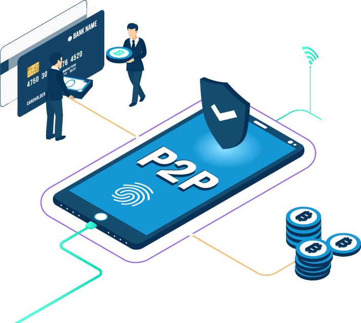

The Fintech Revolution "Transforming the Way We Manage Money"
Welcome to Dr. Mera's Finance Blog, where we unravel the dynamic world of financial technology (fintech). In this post, we explore the profound impact of fintech on how we manage and interact with our finances. Join us as we navigate through the fintech revolution and its transformative effects. Here are some of the main effects Fintech has brought to financial systems and the financial institytions.
Digital Banking: Redefining Accessibility
Traditional brick-and-mortar banking is making way for digital banking solutions. With the rise of online banking apps, users can manage their accounts, transfer funds, and even apply for loans—all from the convenience of their smartphones. The seamless integration of technology has made banking more accessible than ever.

Cryptocurrencies and Blockchain: Shaping the Future of Transactions
Cryptocurrencies like Bitcoin and Ethereum, powered by blockchain technology, are revolutionizing the way we transact. Decentralized and secure, these digital currencies offer faster, more transparent transactions while opening up new avenues for investment and financial innovation.
Robo-Advisors: Smart Investing Made Simple
Robo-advisors are transforming investment management by leveraging algorithms to provide automated, low-cost investment advice. Investors can benefit from diversified portfolios tailored to their risk tolerance and financial goals. The accessibility and affordability of robo-advisors democratize investment opportunities for a broader audience.

Peer-to-Peer Lending: Disrupting Traditional Borrowing
Fintech platforms facilitating peer-to-peer lending are challenging traditional banking models. Borrowers can access funds directly from individual lenders, often at competitive rates. This decentralized approach is reshaping the lending landscape, providing alternative financing options to a diverse range of individuals and businesses.

Mobile Payment Solutions: The Cashless Revolution
Mobile payment apps have made cashless transactions mainstream. From digital wallets to contactless payments, fintech has eliminated the need for physical currency. The speed and convenience of mobile payments enhance the overall consumer experience, contributing to the decline of traditional payment methods.

Insurtech: Innovations in Insurance
Insurtech introduces technological advancements to the insurance industry, streamlining processes and improving customer experiences. From AI-driven underwriting to IoT-based risk assessment, insurtech is enhancing efficiency, reducing costs, and tailoring insurance products to individual needs.
Open Banking: Fostering Collaboration
Open banking initiatives encourage financial institutions to share customer data securely with third-party developers. This collaboration fosters innovation, allowing users to access a broader range of financial services and enabling fintech startups to create innovative solutions that leverage existing financial infrastructure.

The fintech revolution is reshaping the financial landscape, providing individuals and businesses with unprecedented access, efficiency, and customization in managing their finances. Stay tuned to this blog as we continue to explore and analyze the latest trends and innovations in the dynamic world of fintech.